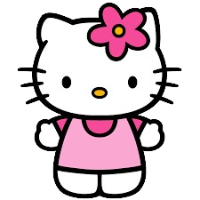

|  | Hello Kitty (ハローキティ, Harōkiti)[1] adalah nama untuk sebuah karakter yang didesain oleh perusahaan Jepang, Sanrio. Hello Kitty yang memiliki nama lengkap Kitty White adalah personifikasi dari kucing berwarna putih dengan ciri khas pita atau hiasan lainnya di daun telinga sebelah kiri dan mulut yang tidak digambar. Hello Kitty pertama kali diperkenalkan di Jepang pada tahun 1974. Hak cipta Hello Kitty didaftarkan pada tahun 1976 dan sekarang merupakan merek dagang di seluruh dunia. Pada waktu pertama kali diperkenalkan, target utama pemasaran Hello Kitty adalah anak perempuan, tapi sekarang penggemar Hello Kitty terdiri dari wanita maupun pria dari berbagai kalangan usia. Meskipun profil karakter resminya menyebut dirinya "Hello Kitty", nama aslinya adalah Kitty White , dan dia lahir di pinggiran kota London , Inggris pada tanggal 1 November. Tinggi badannya digambarkan sebagai lima buah apel dan beratnya sebagai tiga buah apel (walaupun berbagai media menggambarkan ukuran yang berbeda). Dia digambarkan sebagai gadis cantik yang imut, pemalu, cerdas, manis, baik hati dan tomboy, dan dia sangat dekat dengan adik kembarnya, Mimmy . Kitty pandai membuat kue (meskipun dia mengklaim bahwa dia adalah koki yang buruk di The Wonderful Sisters ) dan menyukai pai apel buatan Mama . Dia suka mengoleksi benda-benda kecil yang lucu. Dia adalah siswa kelas 3 dan mata pelajaran favoritnya di sekolah adalah bahasa Inggris, musik dan seni. Golongan darahnya adalah A. Ciri khas Hello Kitty adalah pita merah di telinga kirinya. |
| Informasi Lebih Lengkap Bisa Kamu Baca Disini!૮₍˶ᵔ ᵕ ᵔ˶₎ა |